Mont-Brouilly 2006

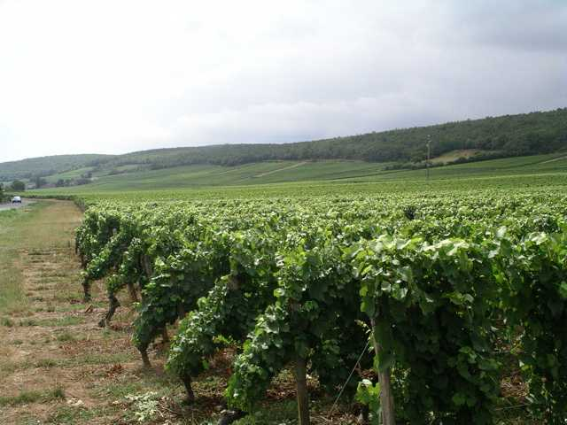
Le premier festival de Gaby, sur le Mont-Brouilly, en plein Beaujolais. Un site splendide, avec vues... sur le Beaujolais et sur toute la plaine de la Saône. Certains jours, il paraît qu'on voit même le Mont-Blanc !

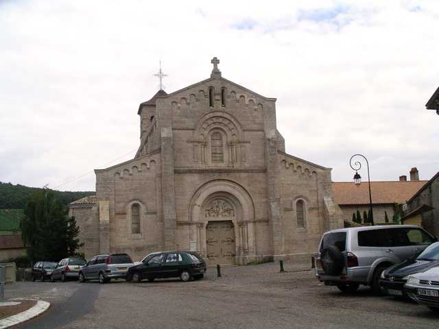
Petit tour en Bourgogne avant d'arriver au Mont Brouilly... La culture, ici, c'est aussi la préhistoire avec des grottes, et les églises romanes !

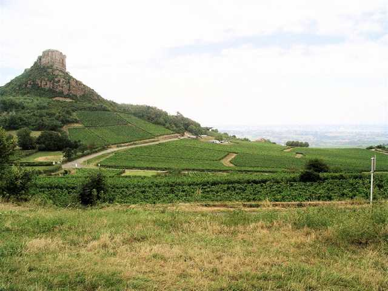
La préhistoire, c'est aussi la Roche de Solutré, où on dit que les hommes préhistoriques acculaient les chevaux sauvages à sauter dans le vide... Site d'autres anecdotes, aussi...

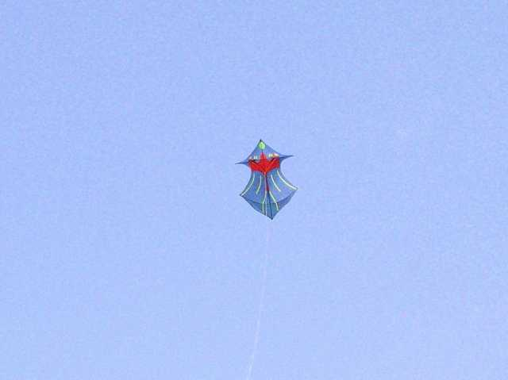
Arrivée vendredi après-midi, un vent à décorner les boeufs. Vol de quelques fondus dans les rafales et les turbulences de la colline...

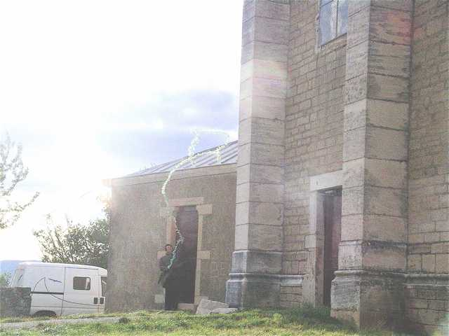
Cette dame (Marie-Thérèse, je crois) a passé deux heures à jouer avec une queue dans les tourbillons formés autour de la chapelle.

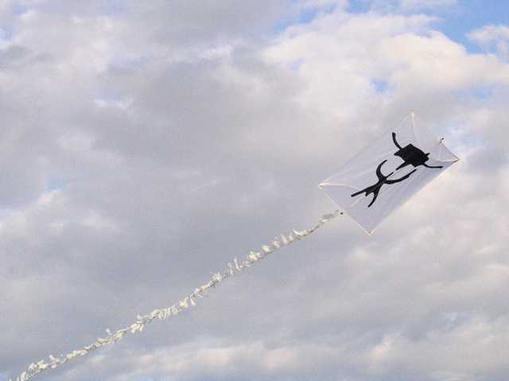
Michel Sollin a fini par réussir à faire voler ce cerf-volant inspiré d'une structure et d'un dessin de Claudio Capelli (ou pariétal préhistorique ?), à force de rajouter des queues !

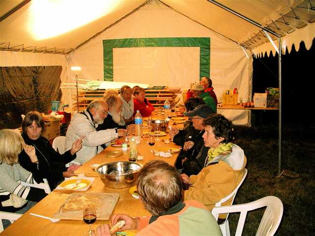
Vendredi soir, déjà, le dîner est prévu, très diététique, salade, fruits...

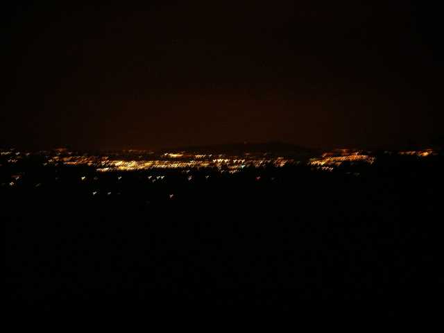
Le soir, vue féerique sur la vallée où les illuminations nocturnes ont été mises en place spécialement pour nous !

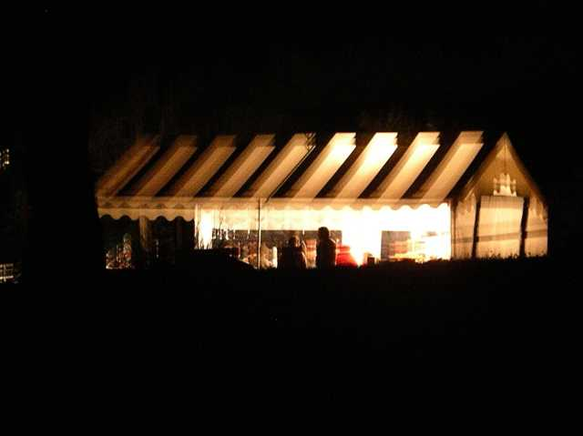
Même la tente bénéficie d'éclairage nocturne et les conversations se poursuivront tard...

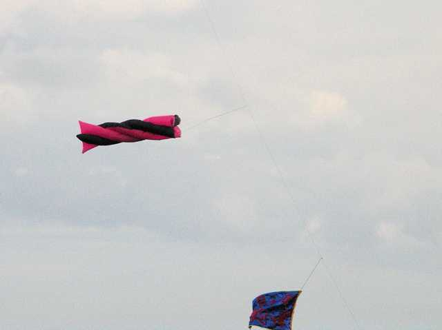
Samedi matin, les vols reprennent, les vents sont moins forts, mais toujours turbulents, forcément, sur la colline. En fait, il faut décoller dans le terrain de derrière, puis venir devant pour voler en admirant le paysage...

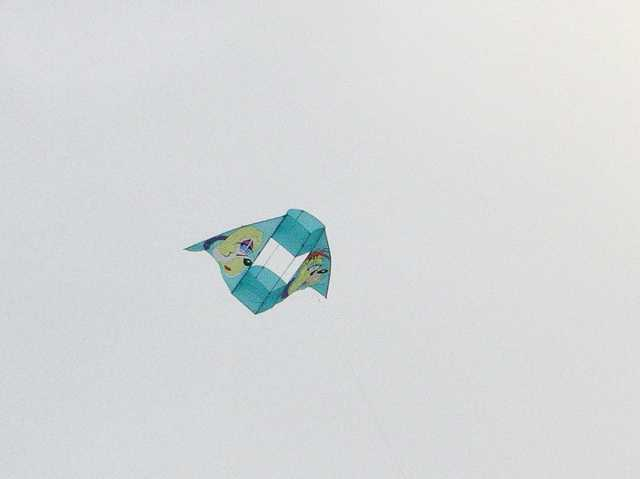
Un des rares cerfs-volants à réussir à décoller sur la terrasse de devant, ce delta à cellule très stable...

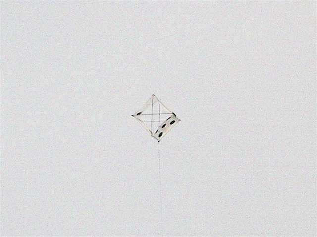
Encore plus simple, ce cellulaire diagonal mais que je n'ai pas beaucoup vu ensuite.

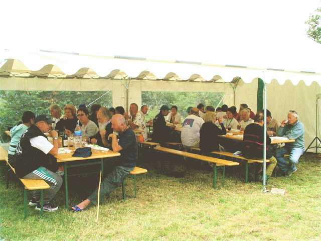
Samedi, déjeuner sous la tente, on a redescendu les CVs, car si ils tombent, c'est dans des arbres dans la pente, récupération difficile !

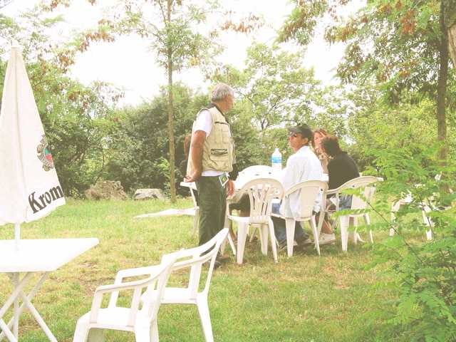
On pouvait manger sous la tente, ou déjeuner en plein air sous les ombrages...

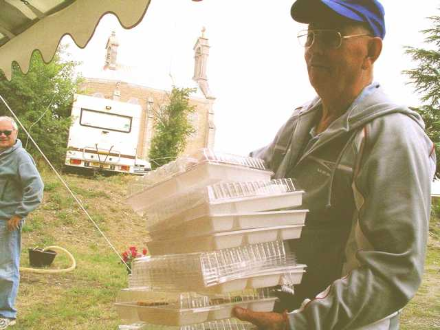
Monsieur Orsenigo parle beaucoup, mais il est aussi capable de mettre la main à la pâte !

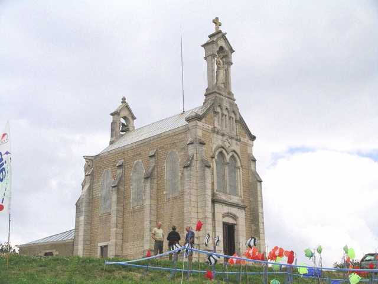
La chapelle occupe le sommet de la colline, avec la vierge protectrice au haut du fronton, et une assez grosse cloche (pour une chapelle) au-dessus du choeur !

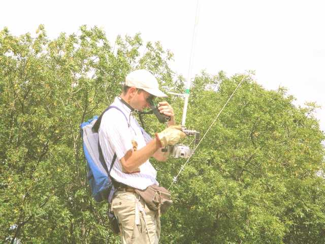
Une chapelle ? Christophe ne peut pas y résister et fourbit son matériel photo... (il fera aussi avec JC le tour des "châteaux" locaux)

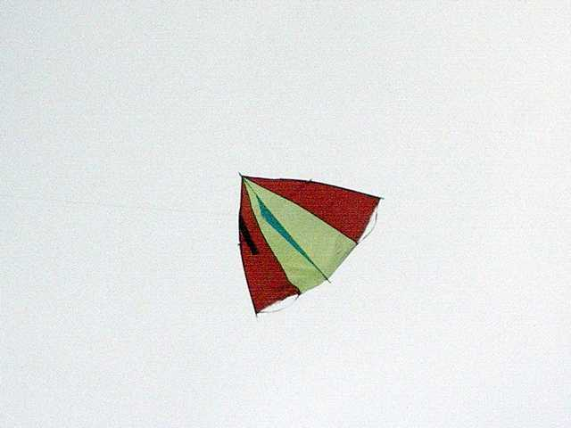
Il utilise toujours son delta-vapeur spécial, avec les ourlets stabilisateurs qui forment des festons à l'arrière...

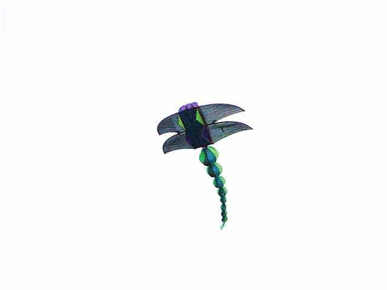
William est venu avec sa Volvo, son clackson (vous savez, le Pont de la Rivière Kwai !) et ses CVs. Celui de la photo a bien volé, mais a dû être remplacé quand le vent a forci...

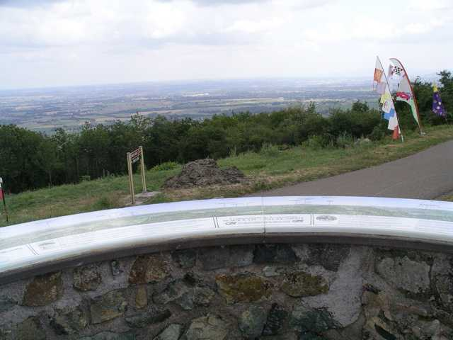
Devant le parvis de la chapelle, une table d'orientation permet de se repérer dans le panorama, et indique... le Mont-Blanc !

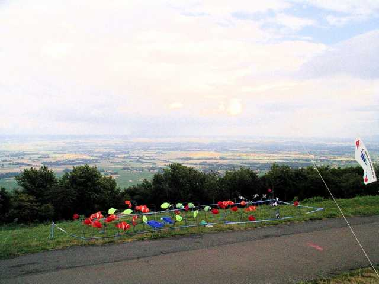
En contrebas, l'équipe Suisse d'Element'Air, sous la houlette de Bernard Clerc, a planté son jardin de poissons qui augmente à chaque prestation.

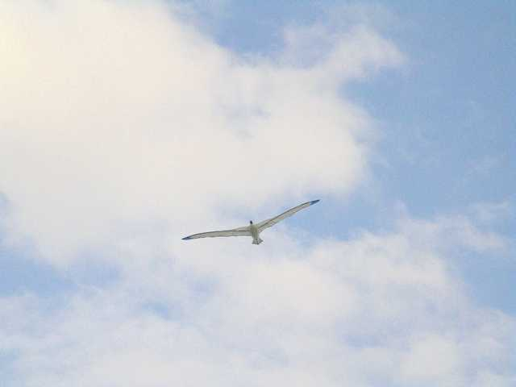
J'ai sorti mon Albatros 2 qui, au gré des perfectionnements, devient suffisamment fiable pour des vents aussi turbulents et forts. Valait quand même mieux monter à au moins 80 m pour trouver un peu de stabilité...

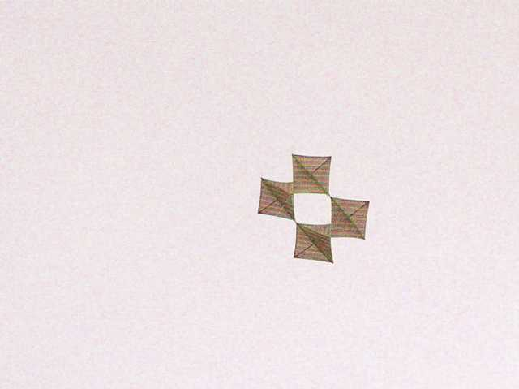
William a sorti son Pelybox (je sais, j'ai déjà écrit Pellibox, ou Pellybox, mais je travaille et ça s'écrit Pelybox)... Ca ne l'a pas empêché de se planter dans les arbres le dimanche, on s'est arrangé pour faire ce genre d'animation toutes les demi-heures !

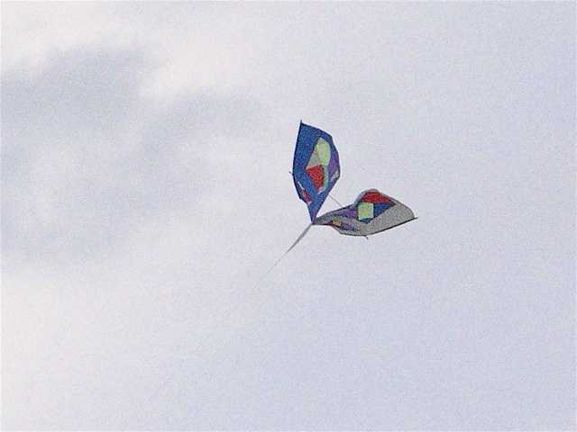
... Le public était ravi ! Ce delta, comme celui de Bernard Arus, souffrait aussi beaucoup et repliait les ailes en vol comme un papillon posé !

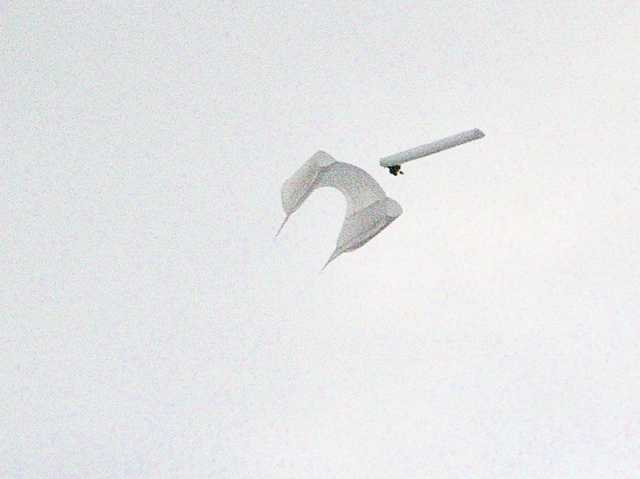
Ce Sled gonflable avait l'air de tenir la route, mais avec une queue...

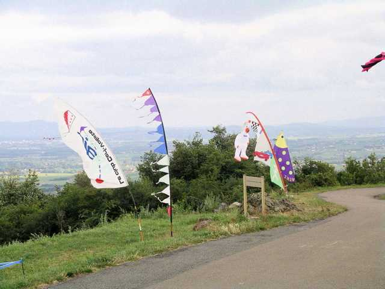
La route était aussi balisée de bannières à tous les carrefours depuis la vallée, et jusqu'au haut de la colline !

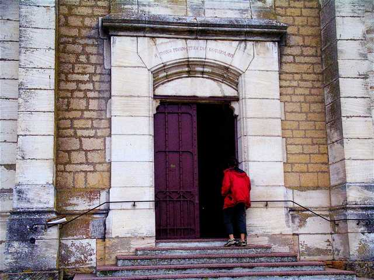
De là-haut, Marie nous observait en souriant... La chapelle a été ouverte à la visite tous les jours toute la journée, rareté à signaler dans nos campagnes françaises...

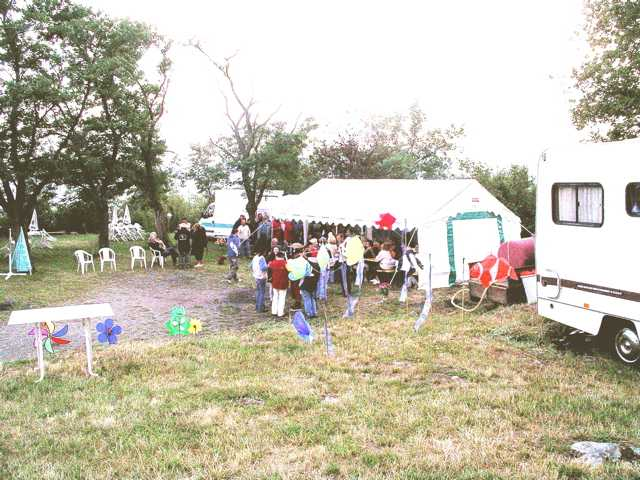
Dimanche, après le déjeuner, une certaine agitation régnait autour du barnum...

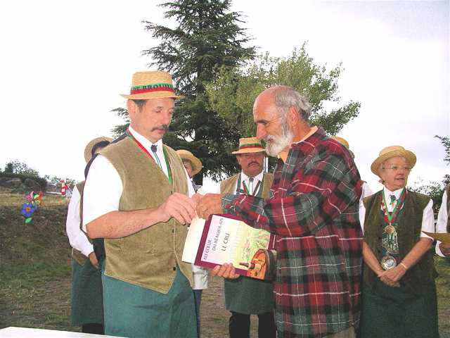
C'est qu'une cérémonie d'intronisation dans la confrérie des "Amis de Brouilly" était lancée. Gaby a été bien sûr le premier appelé.

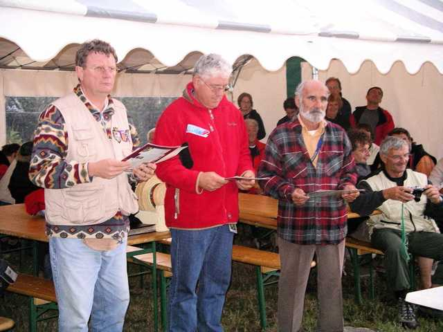
Mais aussi François et Bernard pourtant adepte du Fendant...

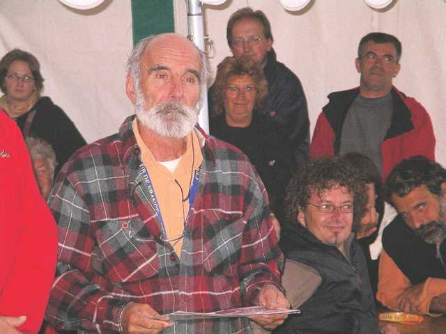
Gaby avait l'air ému. Mais il avait bien mérité ça pour tous les efforts faits pour cette fête !

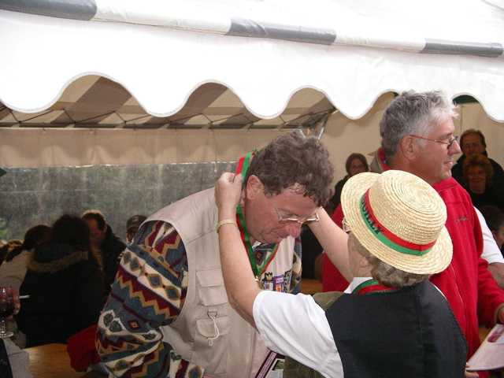
Ensuite, remise des médailles par la charmante présidente (?) !

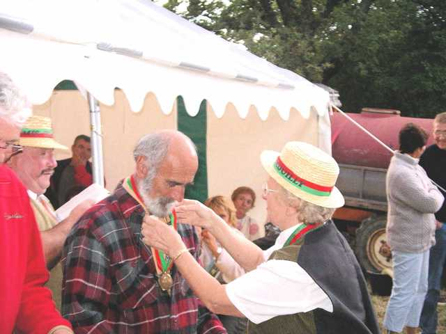
Et Gaby a eu la sienne aussi !

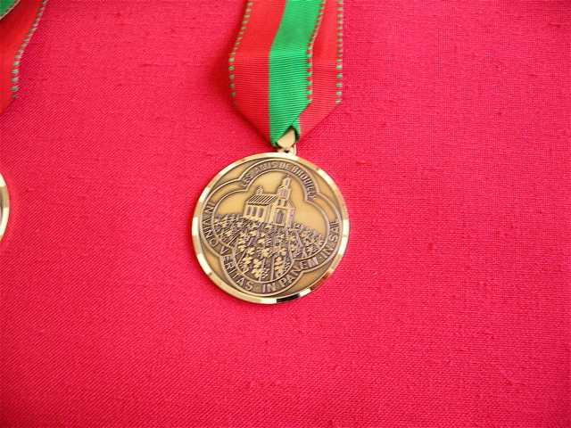
Une belle médaille, pas en or quand même !

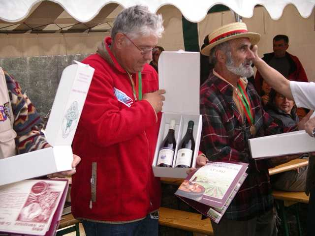
Mais il y a eu aussi du solide, enfin, du liquide... Deux bonnes bouteilles de Côtes de Brouilly ! Et le chapeau de paille insigne des vignerons de la confrérie...

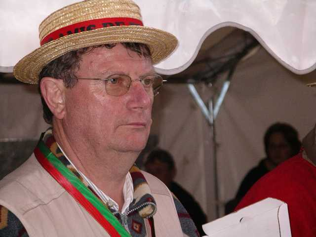
François l'a reçu avec la dignité qui convient à l'événement !

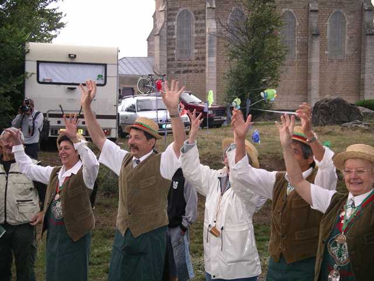
Pour finir, tout le monde a chanté la petite chanson des vignerons, avec les gestes traditionnels.

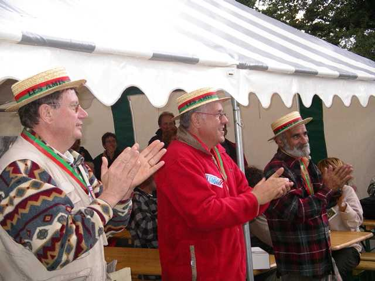
Et les 3 intronisés ont tapé dans les mains à l'unisson !

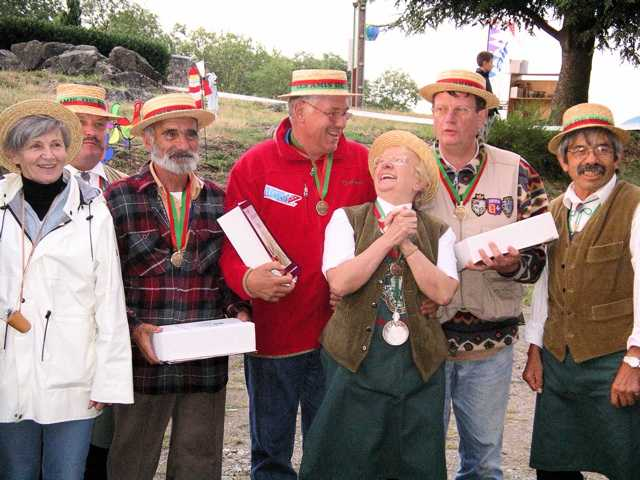
Et pour finir, la photo de groupe pour commémorer la chose !

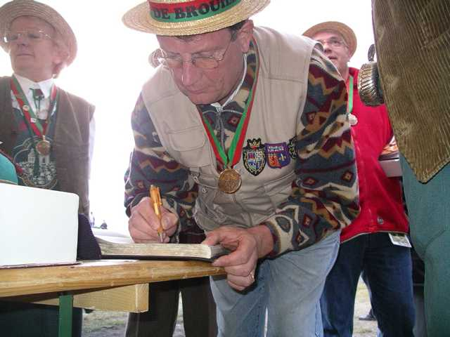
Pour finir, signature du Livre d'Or pour tous les nouveaux membres.

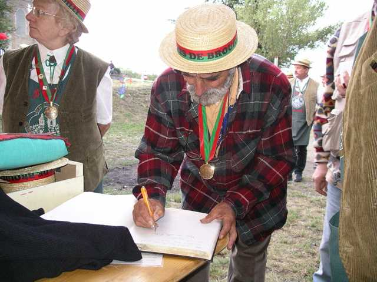
Gaby signe aussi, après tout, c'est SA fête !

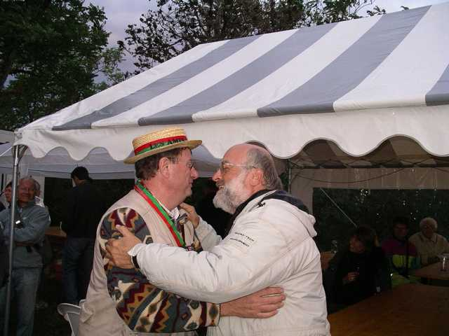
Et Sylvien fait la bise avec enthousiasme et respect au nouveau Côtes-de-Brouillyssois !

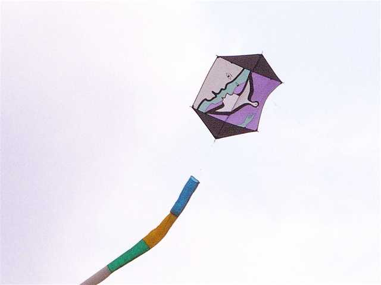
Mais pendant ce temps, ne vous inquiétez pas, les cerfs-volants volaient toujours, comme ce Rokkaku-oiseau que je ne pouvais pas passer sous silence...

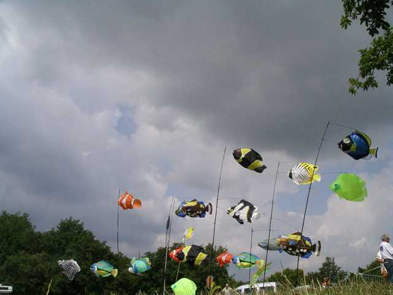
Les Suisses avaient monté un deuxième aquarium sur la prairie derrière, avec de jolis poissons de coraux !

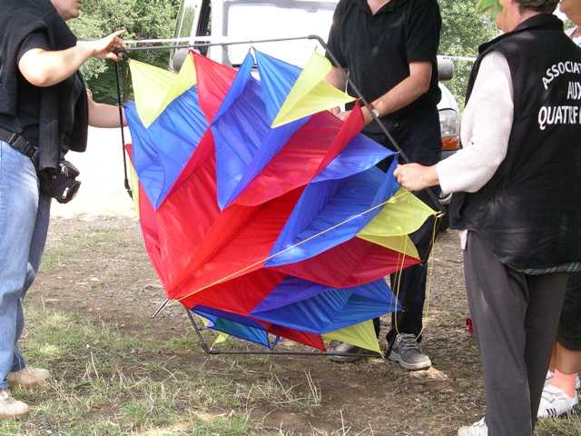
Et on montait encore du nouveau, même si ce flocon paraissait peu tendu pour les conditions aérologiques !

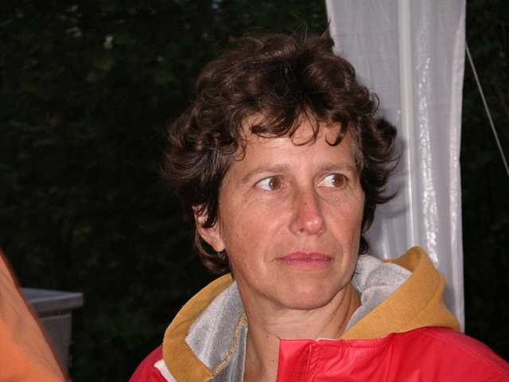
La fille de Gaby s'est démenée tout le week-end pour que rien ne manque, et commençait un peu à fatiguer, temps que ça se termine...
Plein de festivals nouveaux, cette année, et variés et tous plus intéressants les uns que les autres. Un terrain... spécial mais utilisable, pittoresque avec des vues splendides, du vent sans doute permanent en haut de la colline, un accueil à la Gaby, toujours chaleureux et sympa, refaites-nous-le l'année prochaine, on reviendra !